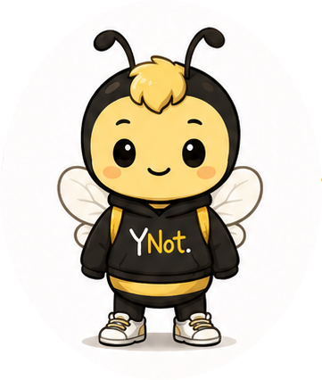
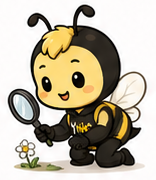
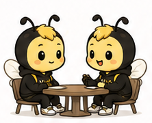
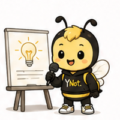
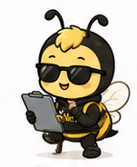
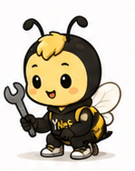
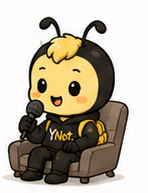

Fall Quarter
Think of it as a trail through the hive: small, ordinary bees, each one stopping to create a little value along the way. No single stop is the whole point — the trail is. Here's every stop this Fall.
-

standingWeek 0 · KickoffGBM
Come meet the hive. We'll walk through the TRY framework, tell you what the quarter looks like, and open sign-ups for everything below.
-
Fear removed: talking to strangers, asking

problem huntWeeks 1–2Problem Hunt
Members spend 15 minutes finding real people and collecting real problems, then bring it all back and map it on a board as a group.
-
Fear removed: being alone

speed datingWeeks 3–4Cofounder Speed Dating
Pre-matched cofounder meetups — no cold-emailing strangers, no guessing who's actually looking for a team.
-
Fear removed: being judged

pitch face offWeeks 5–6Pitch Face Off
Everyone gets the same randomized idea, everyone pitches it, and the room judges — so no one's original idea is ever on the line.
-
Fear removed: investors

investor nightWeeks 7–8Investor for a Night
Members play VC for a night, reviewing real anonymized decks and deciding what they'd actually fund.
-
Fear removed: failure

teardownWeeks 9–10Teardown
Members rebuild the full journey of one startup that made it and one that didn't — same starting line, different endings.
-
Fear removed: shame

failure panelFinals weekProved Them Wrong: The Failure Panel
Speakers share their biggest failure, not a highlight reel. We close the quarter on honesty.